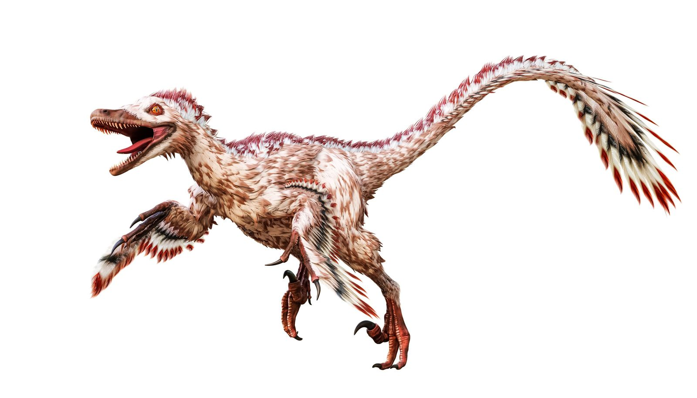
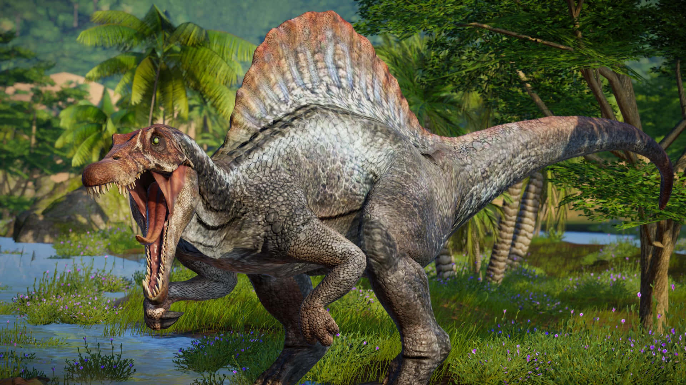
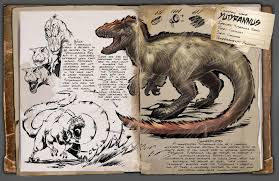

Dinosaurios Carnívoros
Tyrannosaurus Rex
📋 Ficha Técnica
El Tyrannosaurus Rex, cuyo nombre significa "Rey Lagarto Tirano", fue uno de los dinosaurios carnívoros más grandes y poderosos que jamás existieron. Con una mandíbula capaz de ejercer una fuerza de mordida de hasta 12,800 libras, era el depredador supremo de su ecosistema. Sus dientes, que podían medir hasta 30 centímetros de longitud, estaban diseñados para triturar huesos.
Dato Curioso
A pesar de su tamaño masivo, estudios recientes sugieren que el T-Rex podía alcanzar velocidades de hasta 27 km/h, lo suficientemente rápido para perseguir a sus presas.

Velociraptor
📋 Ficha Técnica
El Velociraptor mongoliensis, cuyo nombre significa “Ladrón veloz”, fue un dinosaurio carnívoro de pequeño tamaño que vivió hace unos 75 millones de años en lo que hoy es Mongolia. Medía alrededor de 2 metros de largo y pesaba unos 15 kilogramos, pero compensaba su tamaño con agilidad e inteligencia. Poseía una garra curva y afilada en cada pie, usada para atacar y sujetar a sus presas. Además, estaba cubierto de plumas, lo que refuerza su parentesco con las aves modernas.
Dato Curioso
Los fósiles muestran que el Velociraptor tenía plumas, lo que lo convierte en un ancestro cercano de las aves modernas. Su inteligencia era comparable a la de algunas aves actuales.

Giganotosaurus
📋 Ficha Técnica
El Giganotosaurus carolinii, cuyo nombre significa “Reptil Gigante del Sur”, fue uno de los dinosaurios carnívoros más grandes que existieron, incluso superando en tamaño al famoso Tyrannosaurus rex. Este imponente depredador medía alrededor de 13 metros de largo y podía pesar hasta 8 toneladas. Poseía una mandíbula poderosa equipada con dientes de hasta 20 centímetros de longitud, con bordes afilados como cuchillas, ideales para desgarrar la carne de sus presas.
Dato Curioso
El Giganotosaurus fue descubierto en 1993 por un aficionado argentino llamado Rubén Carolini mientras paseaba por la Patagonia.

Spinosaurus
📋 Ficha Técnica
El Spinosaurus es el dinosaurio carnívoro más grande conocido, superando incluso al Tyrannosaurus Rex en tamaño. Su característica más distintiva es la enorme vela en su espalda, formada por espinas vertebrales que podían alcanzar 1.8 metros de altura. Era semiacuático y se alimentaba principalmente de peces, aunque también cazaba presas terrestres.
Dato Curioso
Descubrimientos recientes revelan que el Spinosaurus era el primer dinosaurio nadador conocido, con una cola en forma de paleta que le permitía moverse eficientemente en el agua.

Yutyrannus
📋 Ficha Técnica
El Yutyrannus huali, cuyo nombre significa “Tirano con plumas hermosas”, fue un impresionante dinosaurio carnívoro que vivió hace unos 125 millones de años en lo que hoy es China, durante el período Cretácico temprano. Aunque no era tan grande como su famoso pariente el Tyrannosaurus rex, el Yutyrannus alcanzaba unos 9 metros de longitud y pesaba alrededor de 1,5 toneladas. Este era un cazador activo, oportunista y se cree que cazaba en grupos..
Dato Curioso
El descubrimiento del Yutyrannus cambió por completo la imagen tradicional de los dinosaurios carnívoros. Hasta entonces, muchos científicos pensaban que solo los dinosaurios pequeños tenían plumas, pero este tirano emplumado demostro que las plumas podrian presentarse en dinosaurios grandes.